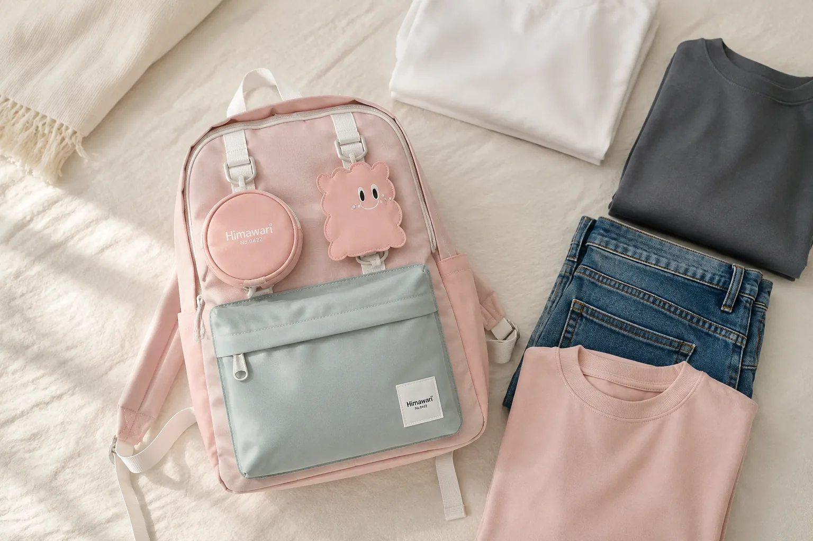

백팩 색상 고르는 법: 자주 입는 옷으로 실패 줄이는 4단계

백팩 색상은 사진에서 가장 예쁜 색보다 실제 옷장과 생활에 자주 연결되는 색으로 골라야 손이 오래 갑니다. 검정처럼 익숙한 색도, 분홍이나 민트처럼 개성이 있는 색도 자신의 옷과 사용 장면에 맞으면 좋은 선택이 됩니다. 아래 네 단계를 따라 후보를 두세 가지로 좁혀 보세요.
1. 일주일에 자주 입는 색 세 가지를 적으세요
출근이나 통학 때 자주 입는 상의, 아우터, 하의를 떠올립니다. 흰색 셔츠와 데님이 많다면 파스텔이나 회색이 자연스럽게 이어질 수 있고, 검정 아우터가 많다면 밝은 가방이 선명한 포인트가 될 수 있습니다. 중요한 것은 유행색이 아니라 내 옷장에서 실제로 반복되는 색입니다.
가능하면 자주 입는 옷 세 벌을 침대나 바닥에 펼치고 후보 가방 사진을 옆에 띄워 보세요. 한 벌에만 잘 맞는 색보다 세 벌 모두에서 어색하지 않은 색이 데일리 가방으로 활용하기 쉽습니다.
2. 가방을 들 장소의 분위기를 나누세요
학교, 사무실, 주말 외출처럼 가방을 사용하는 장면을 적고 가장 비중이 큰 곳을 먼저 봅니다. 사무실에서 단정함이 중요하다면 낮은 채도의 회색이나 검정부터, 캐주얼한 통학과 주말 외출이 중심이라면 옷과 대비되는 색도 후보에 넣을 수 있습니다.
한 가방으로 여러 장면을 오가야 한다면 장식의 수와 색의 대비를 함께 보세요. 색이 선명해도 형태가 단정하면 인상이 달라지고, 무채색이라도 배색과 부자재가 많으면 더 경쾌하게 보일 수 있습니다.
3. 관리 습관까지 색 선택에 포함하세요
밝은색은 작은 얼룩이 빨리 눈에 들어올 수 있고, 어두운색은 먼지나 섬유 보풀이 도드라져 보일 수 있습니다. 어느 색이 무조건 관리하기 쉽다고 단정하기보다 가방을 바닥에 자주 두는지, 대중교통을 자주 이용하는지, 사용 후 닦거나 비우는 습관이 있는지를 함께 생각합니다.
제품 소재에 맞는 관리법은 반드시 제품 안내를 우선하세요. 표면을 정리하는 기본 순서는 백팩 소재별 표면 관리법에서 더 자세히 확인할 수 있습니다.
4. 화면 속 색과 실제 색의 차이를 대비하세요
온라인 사진은 촬영 조명, 화면 밝기와 색 설정에 따라 다르게 보일 수 있습니다. 한 장의 대표 사진만 보지 말고 자연광과 실내광에서 촬영된 여러 이미지, 옆면과 부자재 색, 제품 설명의 색상명을 함께 비교하세요. 교환과 반품 조건도 주문 전에 확인하면 색 선택의 부담을 줄일 수 있습니다.
구매 전 색상 선택 체크리스트
- 자주 입는 옷 세 벌과 모두 어울리나요?
- 가장 자주 가는 장소의 분위기에 맞나요?
- 가방의 본체색과 배색, 부자재를 함께 봤나요?
- 내 관리 습관과 사용 환경을 고려했나요?
- 서로 다른 조명에서 찍힌 사진을 비교했나요?
색을 정했다면 크기와 수납, 착용 방식도 같은 순서로 확인해야 합니다. 전체 선택 기준은 좋은 백팩 고르는 법을, 학생용 색과 구성을 비교한다면 신학기 백팩 선택 가이드를 함께 읽어보세요.
참고·안내
- Himawari 제품별 색상과 상세 사진
- 대표 이미지는 실제 Himawari 제품을 바탕으로 만든 이야기용 연출 이미지이며, 정확한 색은 제품 상세 사진과 설명을 확인해 주세요.
자주 묻는 질문
무난하게 오래 들기 좋은 백팩 색은 무엇인가요?
모든 사람에게 같은 정답은 없습니다. 자주 입는 상의와 아우터 세 벌을 꺼내 함께 놓았을 때 자연스럽게 이어지는 색을 고르는 편이 현실적입니다.
밝은색 백팩은 관리하기 어렵나요?
오염이 눈에 띄는 정도는 소재와 사용 환경에 따라 다릅니다. 밝은색을 고른다면 제품의 관리 안내를 확인하고 바닥에 직접 두지 않는 습관까지 함께 고려하세요.
온라인 사진의 색만 보고 골라도 되나요?
화면 밝기와 촬영 조명에 따라 색이 다르게 보일 수 있습니다. 여러 각도의 사진과 색상 설명을 함께 보고, 교환·반품 기준도 구매 전에 확인하세요.